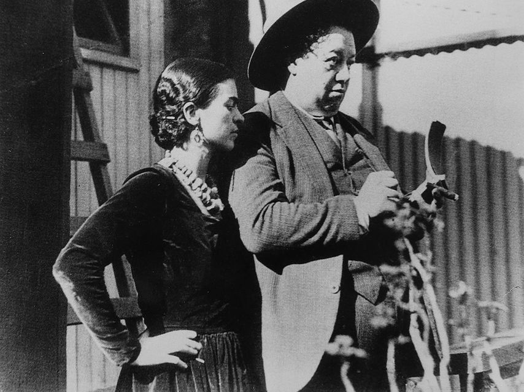

História e biografia de Frida Kahlo
Em 17 de setembro de 1925, Frida sofre um grave acidente. Um ônibus, no qual viajava, chocou-se com um trem. O para-choque de um dos veículos perfurou-lhe as costas, causando uma fratura pélvica e hemorragia. Frida ficou muitos meses entre a vida e a morte no hospital, teve que operar diversas partes e reconstruir por inteiro seu corpo, que estava todo perfurado. Tal acidente obrigou-a a usar coletes ortopédicos de diversos materiais, e ela chegou a pintar alguns deles (como o colete de gesso da tela intitulada A Coluna Partida'). Durante a sua longa convalescença, começou a pintar, usando a caixa de tintas de seu pai e um cavalete adaptado à cama.
Em 1928, entrou no Partido comunista mexicano e conheceu o muralista Diego Rivera, com quem se casa no ano seguinte. Sob a influência da obra do marido, adotou o emprego de zonas de cor amplas e simples, num estilo propositadamente reconhecido como ingênuo. Procurou na sua arte afirmar a identidade nacional mexicana, por isso adotava com muita frequência temas do folclore e da arte popular do México.
Entre 1930 e 1933 passa a maior parte do tempo em Nova Iorque e Detroit, André Breton qualifica sua obra de surrealista em um ensaio que escreveu para a exposição de Kahlo na galeria Julien Levy de Nova Iorque. Não obstante, ela mesma declarou mais tarde: Pensavam que eu era uma surrealista, mas eu não era. Nunca pintei sonhos. Pintava a minha própria realidade. Em 1939, expõe em Paris na galeria Renón et Colle.
A partir de 1943, dá aulas na escola La Esmeralda, no D.F. (México). Em 1953, a Galeria de Arte Contemporânea desta mesma cidade organiza uma importante exposição em sua honra. Alguns de seus primeiros trabalhos incluem o Auto-retrato em um vestido de veludo (1926), Retrato de Miguel N. Lira (1927), Retrato de Alicia Galant (1927) e Retrato de minha irmã Cristina (1928).
Casa-se aos 22 anos com Diego Rivera, em 1929, um casamento tumultuado, visto que ambos tinham temperamentos fortes e casos extraconjugais. Kahlo, que era bissexual, teve um caso com Leon Trotski depois de separar-se de Diego. Rivera aceitava abertamente os relacionamentos de Kahlo com mulheres, mesmo elas sendo casadas, mas não aceitava os casos da esposa com homens. Frida descobre que Rivera mantinha um relacionamento com sua irmã mais nova, Cristina.
Após essa outra tragédia de sua vida, separa-se dele e vive novos amores com homens e mulheres, mas em 1940 une-se novamente a Diego. O segundo casamento foi tão tempestuoso quanto o primeiro, marcado por brigas violentas. Ao voltar para o marido, Frida construiu uma casa igual à dele, ao lado da casa em que eles tinham vivido. Essa casa era ligada à outra por uma ponte, e eles viviam como marido e mulher, mas sem morar juntos. Encontravam-se na casa dela ou na dele, nas madrugadas.
Embora tenha engravidado mais de uma vez, Frida nunca teve filhos, pois o acidente que a perfurou comprometeu seu útero e deixou graves sequelas, que a impossibilitaram de levar uma gestação até o final, tendo tido diversos abortos.
Tentou diversas vezes o suicídio com facas e martelos.
Em 13 de julho de 1954, Frida Kahlo, que havia contraído uma forte pneumonia, foi encontrada morta. Seu atestado de óbito registra embolia pulmonar como a causa da morte. Mas não se descarta a hipótese de que tenha morrido de overdose (acidental ou não), devido ao grande número de remédios que tomava. A última anotação em seu diário, que diz "Espero que minha partida seja feliz, e espero nunca mais regressar - Frida", permite a hipótese de suicídio. Seu corpo foi cremado, e suas cinzas encontram-se depositadas em uma urna em sua antiga casa, hoje Museu Frida Kahlo.